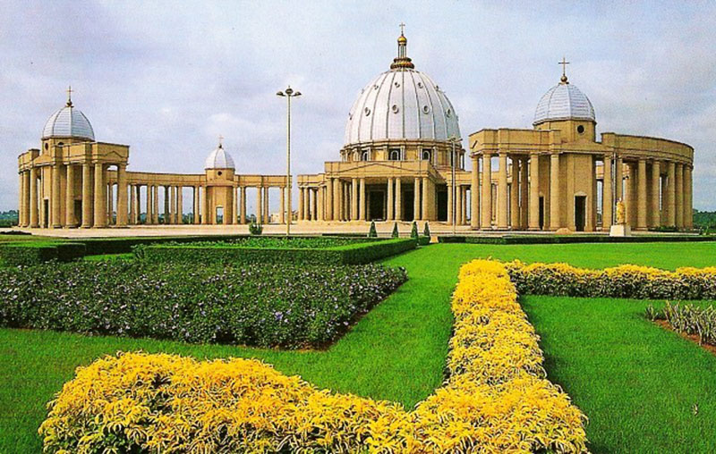

La basilique Notre-Dame de la Paix, située à Yamoussoukro, est l'une des plus grandes églises du monde. Inaugurée en 1990, elle impressionne par sa coupole de 158 mètres de hauteur, inspirée de la basilique Saint-Pierre de Rome.
L'intérieur spacieux peut accueillir 18 000 personnes et est orné de magnifiques vitraux et mosaïques. C'est un lieu de prière et de méditation, attirant à la fois les fidèles et les touristes. Entourée de jardins luxuriants, la basilique offre un cadre paisible, alliant art, spiritualité et culture. Un incontournable lors de votre visite à Yamoussoukro !
localisation G-Map: https://maps.google.com/maps?hl=fr&gl=ci&um=1&ie=UTF-8&fb=1&sa=X&ftid=0xfb8914dc9e3ebfd:0x12d878a614042da
Voir leur site web pour une visite
